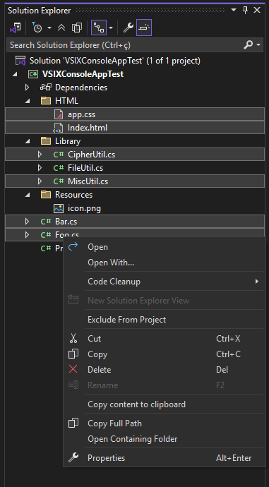

Getting Started with Copy File Contents
- Install the extension via the Visual Studio Marketplace or by opening the
.vsix file manually.
- Open your solution in Visual Studio.
- Select one or more files in the Solution Explorer (use Ctrl ou Shift para seleção múltipla).
- Clique com o botão direito e selecione "Copy content to clipboard".
